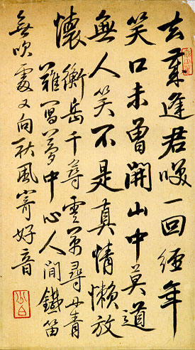

義助慰安婦 —— 李敖百件珍藏義賣藝術品（第12件） 品 名：A12. 陳少白「不是真情懶放懷」詩 預估價：12 萬 成交價：100 萬 說 明： 孫中山在革命時，被列為四大寇，陳少白先生亦其中之一。陳少白晚年不喜做官，著成《興中會革命史要》。此幅作品詩書俱佳，尤以最後一句「不是真情懶放懷」，更見豪放奇情。 
孫中山在革命時，被列為四大寇，陳少白先生亦其中之一。陳少白晚年不喜做官，著成《興中會革命史要》。此幅作品詩書俱佳，尤以最後一句「不是真情懶放懷」，更見豪放奇情。